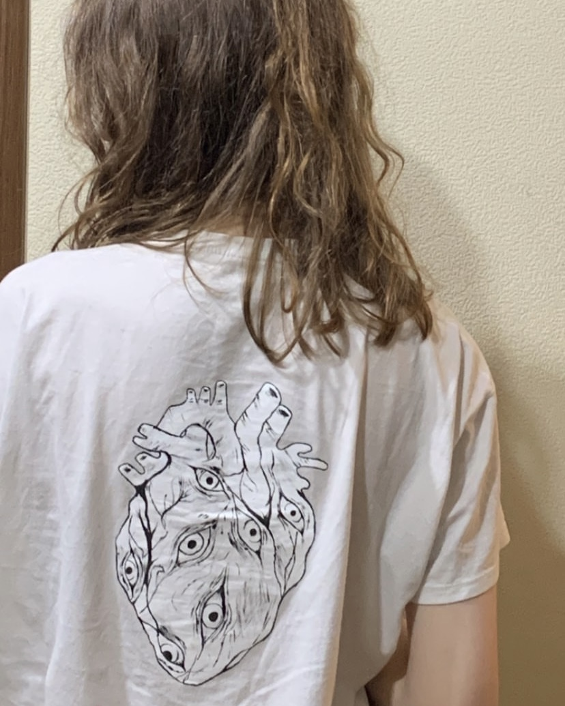
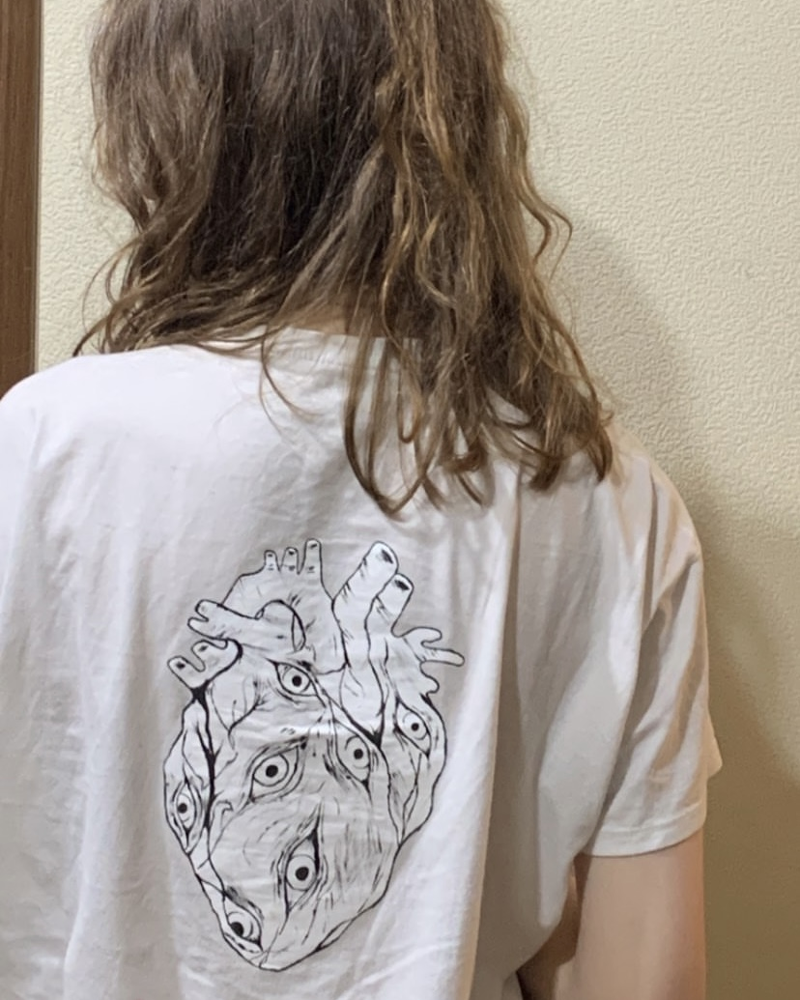
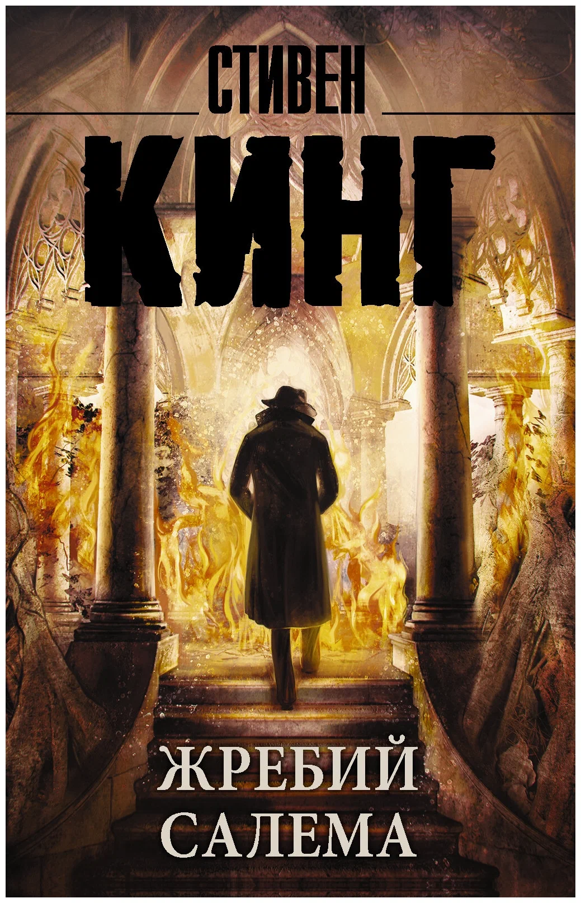
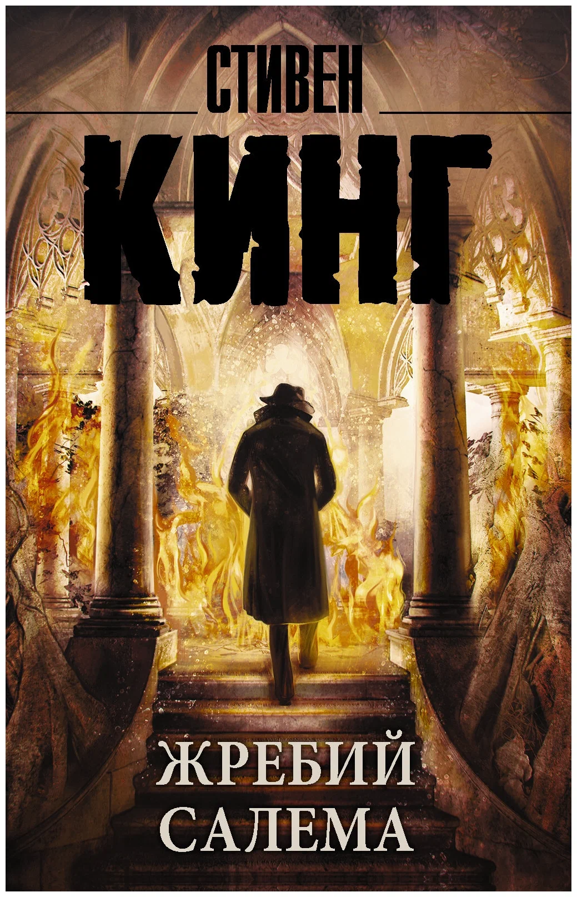

Привет! Меня зовут Настя, и я хочу поделиться с вами тем, что я люблю и делаю в свободное время.
О себе
Еще раз привет!Мне 19 лет и я уже третий живу и учусь в Минске.
На этом сайте Вы сможете узнать что-то новое обо мне и о том, чем я увлекаюсь.
ฅ^•ﻌ•^ฅ
Хобби
Я хочу поделиться с Вами своим увлечениями, которые делают мою жизнь интереснее.
Одно из самых давних моих хобби - рисование🖌
С самого раннего детства я ходила в кружок по рисованию.В 11 лет я принимала участие в выставке работ в Дрездене.
В дальнейшем я начала заниматься кастомизацией одежды и кастомлю заказ.
Вот фото парочки моих работ:

 

Еще одно хобби - гитара 𝄞⨾𓍢ִ໋
Первый раз я пошла в музыкальную школу в 5 лет на скрипку,но не закончила учебу.
Пару лет назад я экстерном закончила музыкальную школу по классу гитара и несколько раз выступала на школьных мероприятиях.

Чтение книг так же является одним из моих хобби🕮
Я начала чиать еще когда была маленькой.Раньше это были разного рода энциклопедии и детские рассказы.С возрастом эта любовь никуда не пропала.
Книги в жанре детектива,фантастики и романы больше всего привлекают мое внимание.
Вот пару моих самых любимых книг:
.webp)
.webp) 
